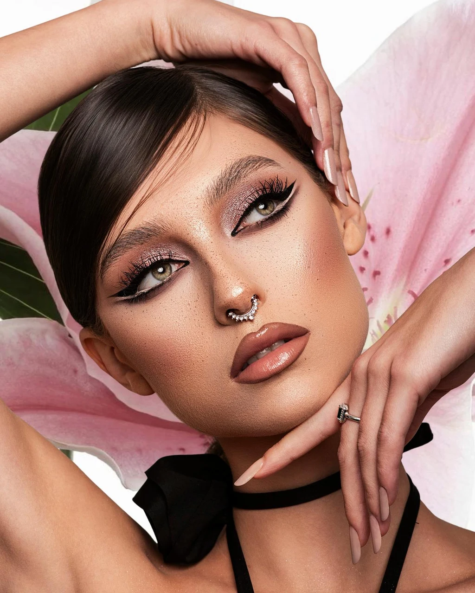

Alb pe mare
Fotografă în Oradea
Petra Butincu
Beauty, fashion editorial și campanii de produs.
Vezi lucrările ↓
Lucrări
Lumină controlată
Pistrui și crin
Silk Wear
Despre
Petra Butincu este fotografă în Oradea, cu lucrări în beauty, fashion editorial și campanii de produs — printre altele, pentru Lumedics și Splendor Professional.
Text de personalizat de Petra
Colaborări: Lumedics · Splendor Professional
Cifre reale — de completat
—
Ședințe foto
—
Colaborări branduri
—
Ani de portofoliu
Testimoniale
„Text de probă. Aici vine ce a spus efectiv un client, după ce Petra are acordul lui.”
Client demonstrativ — Brand de probă
„Text de probă. Loc rezervat pentru un testimonial real.”
Client demonstrativ — Brand de probă
„Text de probă. Se înlocuiește înainte de lansare.”
Client demonstrativ — Brand de probă